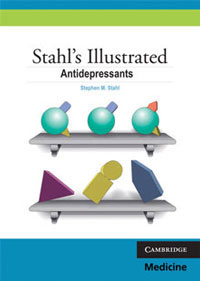
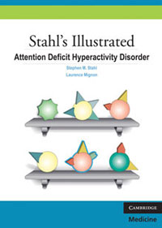
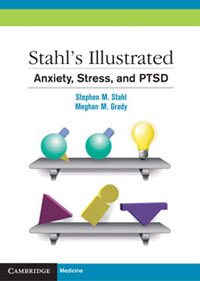
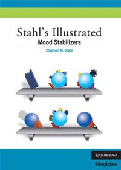
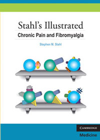

Stahl’s Essential Psychopharmacology | The Illustrated Series
Navigation
Stahl’s Illustrated Series
BUY IT HERE!

BUY IT HERE!

BUY IT HERE!

BUY IT HERE!

BUY IT HERE!

BUY IT HERE!
BUY IT HERE!
GO BACK
Close menu
Home
Fourth Edition 2013
The Prescriber’s Guide
Case Studies
Self-Assessment Examination
Illustrated Series
Stahl’s Online
CNS Spectrums
Related titles
Special Offer